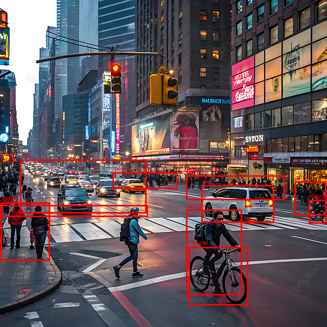

Street-Scene Object Detection
In an outdoor setting with items at various sizes and distances, this test assesses typical open-vocabulary detection.

Results & Observations
The model produced 11 bounding boxes across all three requested categories. People, automobiles, and bicycles were among the output, demonstrating that the model could react to many category labels in a single request.
With a reported rate of around 0.42 boxes per second, the recorded generation time was roughly 26.20 seconds. Some predictions sat close to the margins of the picture, so the annotated output should be visually examined for boxes that could be missing or abnormally big.
Because the specified categories differ visually from one another, this test offers a helpful baseline.